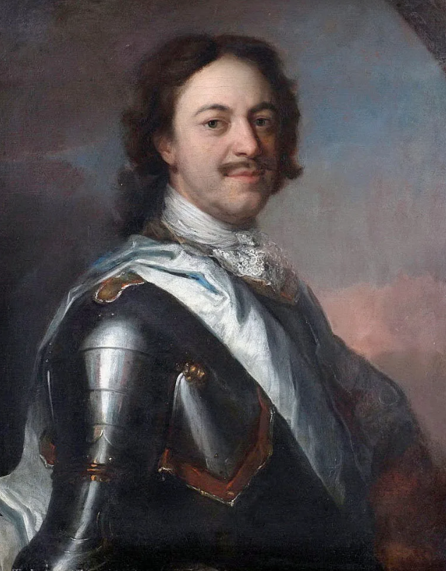
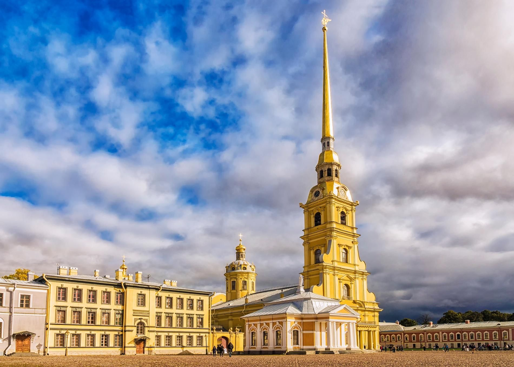
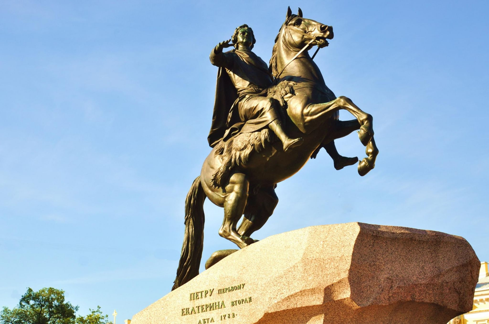

Портрет Петра I
Официальный портрет императора

Летний сад
Парк, основанный Петром I
Кунсткамера
Первый музей России

Петропавловская крепость
Основана в 1703 году

Медный всадник
Памятник Петру I в Санкт-Петербурге
Российский флот
Создание флота при Петре I